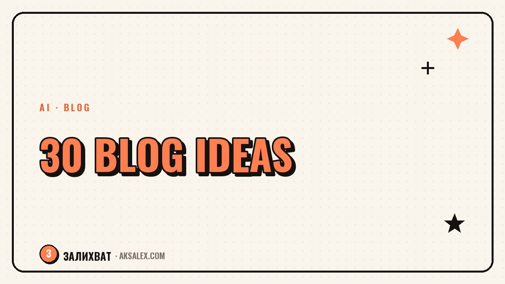

30 Blog Ideas for Moms on Maternity Leave

Why It Feels Like There Are No Topics
It's not that your life is boring. It's that you see it from the inside and you're used to your own routine. What feels like everyday life to you is important, useful information for a reader whose baby was born a month ago.
There's another reason too: the fear that a post is too personal or, on the contrary, too trivial. Drop that thought. A specific experience almost always beats generic, sensible words.
15 Ideas from Everyday Life
- One morning hour by hour - how it actually goes
- What's in your stroller bag and why exactly those things
- A 15-minute dinner you really cook, not one made for the photo
- Your weekly shopping list and why it looks the way it does
- The one hour your baby is asleep: where it actually goes
- One thing that made life easier and one that turned out useless
- What a five-minute cleanup really looks like
- What you tell yourself when you get nothing from your plan done
- One kitchen or bathroom hack that actually works
- Breaking down your weekly budget: where you cut back
- What a trip to the store with a baby looks like
- Three things you bought and regret
- Your daily schedule hour by hour - honestly, with the gaps
- What you do when your baby is sick and you're swamped
- Your happy place at home - the corner where you rest for five minutes
15 Ideas About Motherhood and Personal Experience
- What surprised you most about maternity leave
- A myth about motherhood you believed before giving birth
- A conversation with your child that stuck with you
- A moment when you were scared and how you handled it
- What changed in your relationship with your partner
- A piece of advice you were given that didn't fit - and why
- How your relationship with time changed
- What you'd tell yourself a year ago
- A mistake in the early months you can laugh about now
- What support that actually helps looks like
- What you do for yourself when you have 20 minutes
- The difference between maternity leave with a first and a second child, if there is one
- The question you get asked most often and your honest answer
- What you miss from life before the baby
- A small win this week - any at all, even a silly one
How to Pick a Topic When You Have Almost No Energy
Keep one note on your phone and drop ideas into it the moment they come, not when you sit down to write. A thought about your child's funny phrase is easily forgotten by evening.
A post doesn't have to be a revelation. It's enough for it to be the truth of a single day.
| How much energy you have | What to write |
|---|---|
| Five minutes | A photo and one honest line under it |
| Twenty minutes | An item from this list plus a detail of your own |
| You're in the mood | A personal story with a beginning, middle, and end |
How to Turn a List of Ideas into a Habit
Once a week, pick 2-3 topics from your note and spread them across the days. Don't write everything in one sitting - you'll burn out faster than you'll gain reach. A short post today beats a perfect one that never gets published.
And keep the main thing in mind: followers don't come for a perfect picture of maternity leave, they come for a real person they can recognize themselves in.
Frequently Asked Questions
How often should I post if I'm already short on topics?
Better to post 2-3 times a week consistently than every day for one week and then go silent for a month. Regularity matters more than frequency.
Can I write something personal if I'm afraid of being judged?
Write exactly as much personal detail as feels comfortable to you. Start with safe topics from the list and gradually go deeper.
What should I do if I have an idea but the words won't come?
Start with a voice memo to yourself - say the thought out loud, then transcribe it and clean up the text. That's easier than writing from a blank page.
Do I need to plan content in advance if my day is unpredictable?
Plan topics, not exact publishing times. A list of ready ideas on hand saves even the most chaotic day.
Where do I start if I don't have a blog yet?
Start with the one topic from the list that feels closest to you right now. Don't wait for a perfect first post - it doesn't exist.
Enjoyed this one? Here's what to read next. Let's look at how AI helps write post captions and why the draft still needs polishing.
Read the article →not by hand